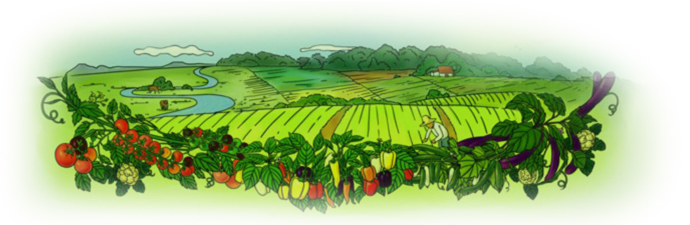
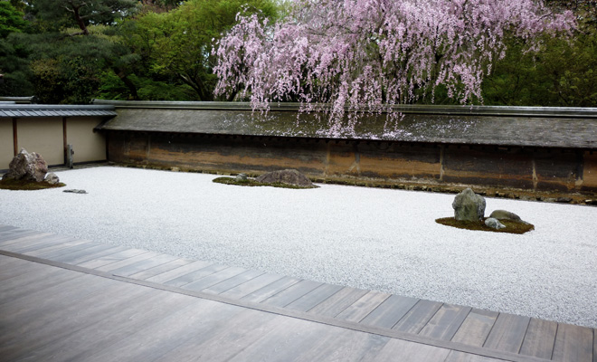

社会责任
SOCIAL
RESPONSIBILITY
抱朴守拙 健康生活
将大地的自然生长作品，转化为真诚、营养与鼓舞的盛宴
城市带来越来越多的便利，却也让人们与自然的隔阂日益加深。近年来，有关慢生活、低碳环保、有机绿色 等概念开始成为人们极力标榜的名词，而轻食主义则意味着在日常中活中更加随意，以低盐、低糖、低油食 物原料以蔬果为主。这也成为一种简单的风尚。

轻食慢生活
在中国，有上亿人群沦陷于食品安全问题——这些现代城市人有着相似的特性，他们会室内健身，也会 户外跑步，他们会轻食净身，也会喜欢营养均衡的有机产品。他们往往是社会的中坚力量，二十岁到 四十五岁，在城市的CBD就职，居住在环境清幽的高档住宅小区，地铁往往是他们选择的最环保的出行工具。
有机时代开场
这是时代的洪流下本心回归，怀揣这份自然情怀，多利以先驱者的姿态，毅然决定为中国渴望回归有 机生活的城市人，找寻新的出路。而今，我们希望的时代，开场了。
